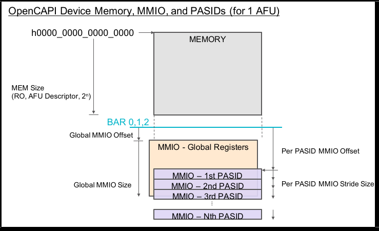
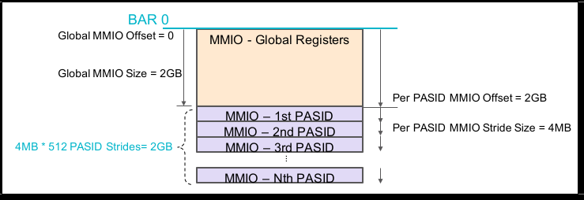

OC-Accel Registers
Configuration Registers link the software and hardware together. User application software code can use the provided libosnap APIs to read and write the registers implemented in FPGA logic, thus configure and control the functions in hardware. Those registers are also called MMIO (memory mapped IO) registers, because they are mapped into a large memory map. The "addresses" of these registers are 64bits wide.
Memory map
The OpenCAPI3.0 device memory map concepts (BAR, MMIO Global, MMIO Per PASID, and also memory space) are specified with respect to OpenCAPI configuration space specification. Here is a conceptual memory map:

For OC-Accel:
- It only supports 1 AFU
- It only supports OpenCAPI3.0 C1 mode. MEM_SIZE = 0
- It supports 512 PASIDs (User Process ID associated with a request)
- It only uses BAR0
- Global MMIO Offset = 0, Size = 2GB
- Per PASID MMIO Offset = 2GB, Stride Size = 4MB
So the above memory map is specified to:

The settings can be found in:
hardware/oc-bip/config_subsystem/cfg_descriptor.v
Address Layout
OC-Accel registers have two categories:
- Global Registers, 8B, defined in Global MMIO space. Use
snap_global_read/write64()to access them. They are 64 bits wide since directly extracted from oc_cfg block. - Action Registers, 4B, defined in Per PASID MMIO space. Use
snap_action_read/write32()to access them. They are 32 bits wide since converted into AXI-lite protocol.
The higher 32bits of tlx_afu_cmd_pa (Physical Address) should be matched with BAR0.
The lower 32bits, also called mmio_address, is processed in OC-Accel.

User can use snap_peek (snap_poke) to read (write) these registers:
- Read OC global BDR register (Build date register):
$ snap_peek 0x0008
[00000008] 0000202011181128
- Read OC action ATR register (Action ID):
$ snap_peek -w32 0x0010
[00000010] 10143009
Global Registers: Summary
| mmio_address[30:8] | mmio_address [7:0] | Abbr. | Register Name |
|---|---|---|---|
| 0x0 (Basic) | 0x00 | IVR | Implementation Version Register |
| 0x08 | BDR | Build Date Register | |
| 0x10 | SCR | SNAP Command Register | |
| 0x18 | SSR | SNAP Status Register | |
| 0x30 | CAP | Capacity Register | |
| 0x40 | FRT | Free Running Timer (Up Time Counter) Register | |
| 0x50 | USR | User Defined Code Register | |
| 0x60 | PRC | Partial Reconfiguration Code | |
| 0x1A0 (Debug) | 0x00 | DBG_CLR | Clear Debug Register |
| 0x08 | CNT_TLX_CMD | Number of TLX Commands | |
| 0x10 | CNT_TLX_RSP | Number of TLX Responses | |
| 0x18 | CNT_TLX_RTY | Number of TLX Retry Responses | |
| 0x20 | CNT_TLX_FAIL | Number of TLX Fail Responses | |
| 0x28 | CNT_TLX_XLP | Number of TLX Translate Pending Responses | |
| 0x30 | CNT_TLX_XLD | Number of TLX Translate Done Responses | |
| 0x38 | CNT_TLX_XLR | Number of TLX Translate Retry Responses | |
| 0x40 | CNT_AXI_CMD | Number of total AXI Commands | |
| 0x48 | CNT_AXI_RSP | Number of total AXI Responses | |
| 0x50 | BUF_CNT | Counts in data buffers | |
| 0x58 | TRAFIIC_IDLE | No traffic over a period | |
| 0x60 | TLX_IDLE_LIM | Length of the period for TLX "no traffic" | |
| 0x68 | AXI_IDLE_LIM | Length of the period for AXI "no traffic" | |
| 0x1C0 (FIR) | 0x00 | FIFO_OVFL | FIFO Overflow Status |
| 0x08 | FIR_TLX | Errors on TLX interface |
Note
FIR means "Fault Isolation Register". It usually means some errors happened.
Global Registers: Details
SNAP Basic Registers
Implementation Version Register (IVR)
- Offset: 0x00
- POR value depends on source for the build. Example for build based on commit with SHA ID eb43f4d80334d6a127af150345fed12dc5f45b7c and with distance 13 to SNAP Release v1.25.4: 0x0119040D_EB43F4D8
| Bits | Attributes | Description | |
|---|---|---|---|
| 63..40 | RO | SNAP Release | |
| 63..56 | RO | Major release number | |
| 55..48 | RO | Intermediate release number | |
| 47..40 | RO | Minor release number | |
| 39..32 | RO | Distance of commit to SNAP release | |
| 31..0 | RO | First eight digits of SHA ID for commit |
Build Date Register (BDR)
- Offset: 0x08
- POR value depends on build date and time. Example for build on January 12th, 2017 at 15:27: 0x00002017_01121527
| Bits | Attributes | Description |
|---|---|---|
| 63..48 | RO | Reserved |
| 47.. 0 | RO | BCD coded build date and time |
| 47..32 | RO | YYYY (year) |
| 31..24 | RO | mm (month) |
| 23..16 | RO | dd (day of month) |
| 15..08 | RO | HH (hour) |
| 07..00 | RO | MM (minute) |
SNAP Command Register (SCR)
- Offset: 0x10
- Send SNAP commands via this register
| Bits | Attributes | Description |
|---|---|---|
| 63..1 | RO | Reserved |
| 0 | WO | soft reset to odma and action_wrapper |
SNAP Status Register (SSR)
- Offset: 0x18
- Status of snap_core
| Bits | Attributes | Description |
|---|---|---|
| 63..4 | RO | Reserved |
| 3 | RO | SNAP fatal error: some bits are asserted in FIR registers |
| 2 | RO | SNAP AXI side busy (?) |
| 1 | RO | SNAP TLX side busy (?) |
| 0 | RO | SNAP idle: Data buffers in snap_core are empty |
SNAP Capability Register (CAP)
- Offset: 0x30
- Define the capability of the card
Bitwise definition
| Bits | Attributes | Description |
|---|---|---|
| 63..32 | RO | Reserved |
| 31..16 | RO | Size of attached on-card SDRAM in MB |
| 15..8 | RO | Reserved |
| 7..0 | RO | Card type: |
| 0x31 : AD9V3 | ||
| 0x32 : AD9H3 | ||
| 0x33 : AD9H7 | ||
| 0x34 : BW250SOC | ||
| 0x35 : AD9H335 |
SNAP Free Running Timer (FRT)
- Offset: 0x40
- is updated at each mmio clock
Bitwise definition
| Bits | Attributes | Description |
|---|---|---|
| 63..0 | RO | Counter value (mmio clock ticks since last reset) |
SNAP User Defined Code Register (USR)
- Offset: 0x50
- Allows user to write a 64 bits wide user defined code in this register to ease debugging versions without modifying the release. (for the time being it is hand written in hardware/setup/patch-version.sh) Use oc_maint -u to read it in simulation or on actual hardware.
Bitwise definition
| Bits | Attributes | Description |
|---|---|---|
| 63..0 | RO | 64 bits (can represent 8 ASCII char) user defined code |
SNAP Partial Reconfiguration Code (PRC)
- Offset: 0x60
- Oc-accel stores a random code in this register to identify the static configuration and provides a mean to verify dynamic configurations against the static image.
Bitwise definition
| Bits | Attributes | Description |
|---|---|---|
| 63..0 | RO | 64 bits (can represent 8 ASCII char) Partial Reconfiguration Code |
SNAP Debug Registers
- base_addr: 0x1A0
Note
Subject to change.
Debug Clear and Debug Counters
DBG_CLR: Clear all of the following debug registers For following registers: bit[63:32] for Reads, bit [31:0] for Writes.
- CNT_TLX_CMD: Number of TLX Commands
- CNT_TLX_RSP: Number of TLX Responses
- CNT_TLX_RTY: Number of TLX Retry Responses
- CNT_TLX_FAIL: Number of TLX Fail Responses
- CNT_TLX_XLP: Number of TLX Translate Pending Responses
- CNT_TLX_XLD: Number of TLX Translate Done Responses
- CNT_TLX_XLR: Number of TLX Translate Retry Responses
- CNT_AXI_CMD: Number of total AXI Commands
- CNT_AXI_RSP: Number of total AXI Responses
- BUF_CNT: How many entries are valid for Read buffer and Write buffer
Traffic Idle status
TRAFFIC_IDLE: Used together with TLX_IDLE_LIM and AXI_IDLE_LIM.
| Bits | Attributes | Description |
|---|---|---|
| 63..6 | RO | Reserved |
| 5 | RO | tlx_cmd_idle in a certain number of cycles |
| 4 | RO | tlx_rsp_idle in a certain number of cycles |
| 3 | RO | axi_cmd_idle (Read) in a certain number of cycles |
| 2 | RO | axi_rsp_idle (Read) in a certain number of cycles |
| 1 | RO | axi_cmd_idle (Write) in a certain number of cycles |
| 0 | RO | axi_rsp_idle (Write) in a certain number of cycles |
SNAP FIR Registers
- base_addr: 0x1C0
FIFO Overflow Status (FIFO_OVFL)
- offset: 0x00
| Bits | Attributes | Description |
|---|---|---|
| 63..6 | RO | Reserved |
| 7 | RO | fir_fifo_overflow_cmdencw (Write Command Encoder) |
| 6 | RO | fir_fifo_overflow_cmdencr (Read Command Encoder) |
| 5 | RO | fir_fifo_overflow_cmdcnv (Command Clock Converter) |
| 4 | RO | fir_fifo_overflow_rspcnv (Response Clock Converter) |
| 3 | RO | fir_fifo_overflow_rspdecw (Write Response Decoder) |
| 2 | RO | fir_fifo_overflow_rspdecr (Read Response Decoder) |
| 1 | RO | fir_fifo_overflow_dbw (Write Data Buffer) |
| 0 | RO | fir_fifo_overflow_dbr (Read Data Buffer) |
TLX Interface errors (FIR_TLX)
- offset: 0x08
| Bits | Attributes | Description |
|---|---|---|
| 63..3 | RO | Reserved |
| 3 | RO | fir_tlx_response_unsupport |
| 2 | RO | fir_tlx_rsp_err |
| 1:0 | RO | fir_tlx_command_credit |
Action Registers: Summary
mmio_address[30:22] means PASID. That means, the first process opens the OC Device, it will attach PASID=0 when it calls mmio_action_read/write32(). Meanwhile, the second process, the third process may attach PASID=1 and PASID=2 when they access the OC Device. Each process has its own "process context", and when OC Device wants to visit the host memory, it has to know which "process context" it belongs to, that means, the OC device needs to send the PASID with its commands. This PASID takes AWUSER or ARUSER as the vehicle to transfer from Action wrapper to snap_core.
HDL design
The user can freely define and implement the Action registers if it is written in Verilog/VHDL. However, there are still a registers that are recommended to implement. They are:
| mmio_address [21:0] | Abbr. | Register Name |
|---|---|---|
| 0x00 | ACR | Action Control Register |
| 0x04 | IER | Interrupt Enable Register |
| 0x10 | ATR | Action Type Register |
| 0x14 | AVR | Action Version Register |
| 0x18 | ISL | Interrupt Handle SRC Address Low |
| 0x1C | ISH | Interrupt Handle SRC Address High |
| 0x30 -> end | Reserved and can be freely used |
Action Control Register (ACR)
- offset: 0x00
| Bits | Attributes | Description |
|---|---|---|
| 31..4 | RO | Reserved |
| 3 | RO | Action Ready |
| 2 | RO | Action Idle |
| 1 | RO | Action Done |
| 0 | RW | Write 1 to start Action, Read it to know whether the action has been started |
Interrupt Enable Register (IER)
- offset: 0x04
| Bits | Attributes | Description |
|---|---|---|
| 31..1 | RO | Reserved |
| 0 | RW | Enable Interrupt |
Action Type Register (ATR)
- offset: 0x10
| Bits | Attributes | Description |
|---|---|---|
| 31..0 | RO | Action Type, i.e, 0x10141008 |
Action Version Register (AVR)
- offset: 0x14
| Bits | Attributes | Description |
|---|---|---|
| 31..0 | RO | Action Release Version, user defined |
Interrupt Handle SRC Address Low (ISL)
- offset: 0x18
| Bits | Attributes | Description |
|---|---|---|
| 31..0 | RO | Interrupt Handle Source Address Low 32bits |
Interrupt Handle SRC Address High (ISH)
- offset: 0x1C
| Bits | Attributes | Description |
|---|---|---|
| 31..0 | RO | Interrupt Handle Source Address High 32bits |
HLS design
OC-Accel has already defined the Action Register Layout for HLS Actions.
| mmio_address [21:0] | Abbr. | Register Name |
|---|---|---|
| 0x00 | ACR | Action Control Register |
| 0x04 | IER | Global Interrupt Enable Register |
| 0x08 | IIE | IP Interrupt Enable |
| 0x0C | IIS | IP Interrupt Status |
| 0x10 | ATR | Action Type Register |
| 0x14 | AVR | Action Release Register |
| 0x18 | ISL | Interrupt Handle SRC Address Low |
| 0x1C | ISH | Interrupt Handle SRC Address High |
| 0x20 | ACTION_HBM_IF_NUM | HBM AXI Interface Number |
| 0x100 | CONTROL1 | sat + flags + seq |
| 0x104 | CONTROL2 | Return Code |
| 0x108 | CONTROL3 | Reserved |
| 0x10C | CONTROL4 | Reserved |
| 0x110 - 0x178 | Job Data Registers (108 bytes) |
Note
0x00 to 0x0C are defined by Xilinx Document UG902.
Action Control Register (ACR)
- offset: 0x00
| Bits | Attributes | Description |
|---|---|---|
| 31..8 | RO | Reserved |
| 7 | RW | Auto Restart |
| 6..4 | RO | Reserved |
| 3 | RO | Action Ready |
| 2 | RO | Action Idle |
| 1 | RO/Clear on Read | Action Done |
| 0 | RW/Clear on Read | Start Action |
Global Interrupt Enable (IER)
- offset: 0x04
| Bits | Attributes | Description |
|---|---|---|
| 31..1 | RO | Reserved |
| 0 | RW | Enable Interrupt |
IP Interrupt Enable (IIE)
- offset: 0x08
| Bits | Attributes | Description |
|---|---|---|
| 31..2 | RO | Reserved |
| 1 | RW | Interrupt for ap_ready is enabled |
| 0 | RW | Interrupt for ap_done is enabled |
IP Interrupt Status (IIS)
- offset: 0x0C
| Bits | Attributes | Description |
|---|---|---|
| 31..2 | RO | Reserved |
| 1 | RW | Status for ap_ready interrupt |
| 0 | RW | Status for ap_done interrupt |
ATR, AVR, ISL, ISH
These 4 registers have the same definitions as in HDL Action.
- offset: 0x10, ATR, Action Type Register
- offset: 0x14, AVR, Action Release Register
- offset: 0x18, ISL, Interrupt Handle SRC Address Low
- offset: 0x1C, ISH, Interrupt Handle SRC Address High
HLS CONTROL Registers
4 registers are defined in actions/include/hls_snap.H.
They take the addresses of 0x100, 0x104, 0x108 and 0x10C.
typedef struct {
snapu8_t sat; // short action type
snapu8_t flags;
snapu16_t seq;
snapu32_t Retc;
snapu64_t Reserved; // Priv_data
} CONTROL;
HLS Job DATA Registers
0x110 to 0x178 are user defined Job data structure. The size limit is 108 bytes. This is usually defined in actions/hls_<action_name>/include/<action_name>.h
For example:
typedef struct helloworld_job {
struct snap_addr in; /* input data */
struct snap_addr out; /* offset table */
} helloworld_job_t;
Acronyms
- PASID : Process Address Space ID